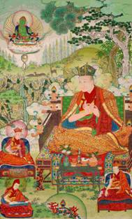
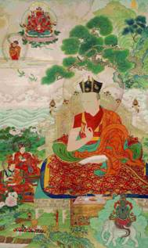
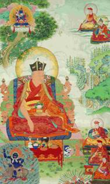

The previous KARMAPAs
1. The First Karmapa, Dusum Khyenpa 1110-1193
 Nine hundred years ago, in 1110 CE, amidst the snow-capped peaks of eastern Tibet, there was born a spiritual master whose compassion for beings would shape the future of Buddhism in Tibet. This great master was the First Karmapa, Dusum Khyenpa, who instituted the practice of intentional reincarnation in a way that disciples could recognize—a practice that forms the backbone of Tibetan Buddhism as we know it today.
Nine hundred years ago, in 1110 CE, amidst the snow-capped peaks of eastern Tibet, there was born a spiritual master whose compassion for beings would shape the future of Buddhism in Tibet. This great master was the First Karmapa, Dusum Khyenpa, who instituted the practice of intentional reincarnation in a way that disciples could recognize—a practice that forms the backbone of Tibetan Buddhism as we know it today.
Buddhism teaches that the sole aim of buddhas and bodhisattvas is to guide others to enlightenment. Since the time of the Buddha, countless bodhisattvas have perfected their training in compassion and skillful means and cared for their disciples wholeheartedly, yet at the moment of passing away have had to leave the ongoing care of those disciples to others.
However, once such great beings have reached a certain level of spiritual attainment, they have the ability to remain aware through the death process and consciously choose their next place of birth. This ability makes it possible for them to indicate the place of their next rebirth before they pass away, so that they can be clearly identified and thus resume the guidance of their students and their broader work in the world. This is the meaning of the term “reincarnate lama.” Tibetan reincarnate lamas such as His Holiness the Dalai Lama and the Gyalwang Karmapa have engaged in this practice for over a dozen lives already. Yet for the first 15 centuries of the Buddhadharma, no master conceived of this ideal means of caring for their disciples life after life—until Dusum Khyenpa, with his extraordinarily creative means and his intense commitment to his students’ well-being and the continuity of the teachings entrusted to him.
The totality with which Dusum Khyenpa embraced his responsibility as a spiritual guide to others was evident both in his deeds and his speech. On one occasion, Dusum Khyenpa and his fellow students had received a teaching by their lama Dagpo Rinpoche, or Lord Gampopa, in which he had identified great compassion as one of the indispensable qualities of a spiritual teacher. As the Dharma friends sat discussing this comment, Dusum Khyenpa offered his understanding of what this implied. As a spiritual teacher, Dusum Khyenpa said, even if one had to go to a hell realm oneself for the sake of a disciple, one would do so willingly, but under no circumstances would one abandon one’s disciples.
Dusum Khyenpa has fully lived up to his own definition of a spiritual guide to beings. Indeed, he has proven himself unwilling to abandon his students, even at the moment of death. After he passed away in 1193, Dusum Khyenpa intentionally returned as the Second Karmapa, Karma Pakshi, and made it utterly clear that he was, in fact, the reincarnation of the First Karmapa. Since then, he has taken an uninterrupted series of rebirths as the Karmapa, returning again and again for more than 900 years to engage in a vast array of activities to benefit beings and the Buddhadharma.
Dusum Khyenpa was the first in Buddhist history to leave indications where he would be reborn so that his disciples could search for his reincarnation. He was also the first to identify himself to previous followers after he was reborn. But he was by no means the last. Indeed, Tibetan Buddhism today would be vastly different without the reincarnation lineages of the many great masters who adopted this practice as a highly effective means of accomplishing a variety of beneficial aims.
Intentionally reincarnating in a form that disciples can recognize allows lamas to maintain long-term, multi-life relationships with their disciples. Although with each new birth, the lama must pass through the natural stages of physical development, they begin that process with a mental maturity far beyond their physical years. This allows them to quickly take up their role as a spiritual guide to their students from the previous life. By resuming relationships with such disciples, they guarantee that they are returning to the situation in which they have the strongest possible karmic and social basis to be of benefit to others. At the same time, they may continue any wider projects initiated in their previous lives, such as developing their monastic establishments, study institutes or retreat centers and attend to the overall transmission of the teaching lineage under their care.
The unparalleled longevity of Buddhist institutions in Tibet is due in no small part to the remarkable resilience of such reincarnation lineages. Over the centuries, Tibetan Buddhism has survived wild fluctuations in political, military and economic conditions. In the 20th century, it managed to reconstitute itself in exile, bereft of all the material conditions that earlier sustained it in its native ground. Human beings have the capacity to adapt far more quickly than large institutions, and each new master in a reincarnation lineage may apply their wisdom and flexibility in response to changing historical circumstances, without losing the over-riding sense of purpose and direction that defines their lineage, and that led them to reincarnate in the first place. In this way, the institution of reincarnation has played a great part in allowing Tibetans to transmit the teachings brought from India over a millennium ago in unbroken lineages, and to cross back to India with that Dharma still a vitally relevant tradition.
What now seems so obvious a way to care for disciples and lineage over generations was not only not obvious in Dusum Khyenpa’s time: it was unheard of. In order to fully comprehend who the First Karmapa was, one would need to imagine so great a yearning for the wellbeing of the world, so firm a commitment to accomplish it himself, and so creative a thinker that he found a previously unimagined means of doing so.
The Life of Dusum Khyenpa
Dusum Khyenpa was born in eastern Tibet in the year 1110 CE, to a mother named Lhathok Zagang Jam and a father named Gompa Dorje Gönpo. His birthplace lies in Dreshö, a part of Dreho, Kham, ringed by snow-covered mountains. Unlike those who preceded him in the Marpa Kagyu lineage, Dusum Khyenpa was born to a humble family with greater aptitude for spiritual practice than worldly success. Both his parents were active practitioners, and the name given him as a child was Gephel, meaning Virtue Increases. His parents sought to ensure that he lived up to his name by teaching him the Dharma as an integral part of his upbringing from the very start. His father’s main practice was Yamāntaka and his mother was described as a natural yoginī. Raised in such an environment, Dusum Khyenpa was steeped in the Dharma from birth. At the age of 11, he received initiation and instruction in the practice of Palden Lhamo from his father and Sherab Gön, a family relative and serious practitioner. In a hint of the attainments to come later in his life, while he was engaging in the practice, Dusum Khyenpa had a direct vision of Palden Lhamo.
His Difficult Adolescence
Although his childhood years helped prepare the young Dusum Khyenpa for the Dharma activities at which he would excel later in life, nothing could prepare him for the emotional storms that would arise in his adolescence. This series of events in his life is usually omitted from his biographies, or referred to only cryptically, or perhaps euphemistically, as “subduing his enemy.” A fuller version of this “subduing” appears in the biography of Dusum Khyenpa compiled by the Eighth Karmapa, Mikyö Dorje. That account indicates that Dusum Khyenpa underwent a period of great inner turmoil during his teenage years. In an age-old scenario that is no less painful because it is so common, Dusum Khyenpa lost the young woman with whom he was romantically involved to another man. The woman was “stolen away” from him by the rival, as the biography puts it. Dusum Khyenpa’s response showed every sign of jealous rage, for he sought out a means to kill the man. Using the black arts of sorcery that Milarepa had likewise deployed, Dusum Khyenpa managed to accomplish his aim, and the man died. Shortly thereafter, Dusum Khyenpa left the householder’s life behind once and for all, to take monastic ordination at the age of 16.
Although his biography does not detail Dusum Khyenpa’s internal state during this time, the incident indicates that Dusum Khyenpa was caught in the grip of overwhelming attachment and the uncontrolled anger that so often arises when one is deprived of an object of strong attachment. However, the fact that he opted to ordain after this episode suggests that the experience awakened in him a deep sense of the futility of spending a life in pursuit of such objects of attachment. His direct experience of the destructive force of his own afflictive emotions surely served as a powerful empirical proof of the truth of the Buddha’s teachings that the causes of suffering lie within, and that the causes of happiness lie there as well.
With the certainty born of this harsh encounter with the suffering caused by his own afflictions, Dusum Khyenpa left behind the life of mundane pursuits once and for all, to enter the door of the Dharma. He was ordained as a novice monk by Dreho Chogi Lama (b. 1056), a 70-year old disciple of the great Tibetan translator Ngog Lotsāwa Loden Sherab (1059-1109). Upon receiving his monastic vows, Dusum Khyenpa had a vision that the Buddha presented him with a black hat. He later fashioned a physical hat modeled on the one in his vision, and this became the first material hat associated with the Karmapa line. At this time, he was given his epithet “Karmapa,” or “Being of Enlightened Activity,” as a secret name.
In Quest of Dharma
Within three years of his ordination, Dusum Khyenpa was on his way to central Tibet, to the preeminent sites for rigorous scholarly study as well as meditative practice. Unbeknownst to him, at the same time a fellow Khampa named Phagdru Dorje Gyalpo, or Phagmodrupa (1110-1170), was also making the long journey from Kham to central Tibet in quest of the Dharma. Born in the same year, the two later met far from home, in the major study centers of the day in Tölung in central Tibet. They became close Dharma friends, and both later entrusted themselves to Gampopa for spiritual guidance. In time, Dusum Khyenpa and Phagmodrupa would prove to be most instrumental in safeguarding the future of Gampopa’s lineage. It was Dusum Khyenpa who founded the Karma Kagyu and Phagmodrupa who trained disciples who later founded the Drukpa Kagyu and Drigung Kagyu lineages. (The Karma Kagyu, Drukpa Kagyu and Drigung Kagyu are the three largest Kagyu lineages from Gampopa still thriving today.)
For the next nine years, Dusum Khyenpa immersed himself in study—first of the major Buddhist philosophical texts, and later of the tantras. At this point in history, Tibet was undergoing a tremendous upsurge in cultural confidence and spiritual maturity. During the 12th century, central Tibet in particular hosted a number of influential lotsāwas who were major teachers and authors in their own right. While in Tölung, Dusum Khyenpa read the most challenging Indian treatises with the finest teachers of the day. With no less illustrious a scholar than Gyamarpa (11th century) and his brilliant prodigy Chapa Chökyi Senge (1109-1169), Dusum Khyenpa studied the principal texts of Asaṅga, as well as Nāgārjuna’s Mūlamadhyamakakārikās, Candrakīrti’s Madhyamakāvatāra and Āryadeva’s Catuḥśataka, gaining a firm grounding in the views of the two major streams of Mahāyāna philosophy: Cittamātra and Madhyamaka.
His training in these texts complete, Dusum Khyenpa proceeded to the great Kadampa center of Phenyul. As a particularly promising student, he was taught the six treatises of Nāgārjuna by Patsab Lotsāwa, the 12th century’s greatest proponent of Prāsaṅgika Madhyamaka philosophy. For a further six years, Dusum Khyenpa studied Kadampa texts under the Kadam master, Geshe Sharwapa. He further trained in tantra, receiving the set of six yogic practices associated with the Kālacakra tantra, as well as the Kākamukha Mahākāla tantra.
During this period, Dusum Khyenpa took his bhikṣu ordination—the highest level of monastic ordination. A student of Geshe Sharwapa, Mel Dulwa Dzinpa (Holder of the Vinaya) acted as preceptor, and Yeshe Lodrö as ritual master. Dusum Khyenpa trained thoroughly in the foundational training for monastics, the vinaya, excelling to the point where he was asked to teach vinaya to others.
Meeting Gampopa
At the age of 30, Dusum Khyenpa decided to search out the master who would show him the greatest kindness, leading him to the highest realization on the path—Lord Gampopa, also known as Dagpo Rinpoche. As Dusum Khyenpa was heading to Gampopa’s seat at Daglha Gampo, he first encountered Gampopa’s nephew, Gomtsul (1116-1169), and took teachings from him.
Upon arrival in Daglha Gampo, Dusum Khyenpa was made to wait two months before Gampopa would receive him. With his six years of study of the Kadampa teachings and his deep knowledge of the Indian philosophical treatises, Dusum Khyenpa came to Gampopa with a strong intellectual understanding of the Dharma. Nevertheless, when Gampopa finally agreed to receive him, he initially granted Dusum Khyenpa only lam rim or “gradual path” teachings, which had already formed part of the basic curriculum that Dusum Khyenpa had studied for years under Kadampa masters. Gampopa offered the eager Dusum Khyenpa no secret transmissions or special instructions, but only advised him to practice the lam rim, saying, “I meditated on this. You should do so too.”
Though Dusum Khyenpa may have expected more advanced or esoteric instruction, he diligently followed Gampopa’s advice, and entered solitary retreat for nine months. He engaged with full intensity in the meditative practices Gampopa had indicated for him, wearing only a single cotton cloth. He meditated with such exertion that the perspiration never dried from his hands for nine months.
Over the years, Gampopa guided Dusum Khyenpa with great skill, offering him instruction for some time and then sending this determined meditator off to practice in solitude. Gampopa directed Dusum Khyenpa to meditate in various sites across southern Tibet, ranging from Dagpo, Ölkha, into Tsang and down to a border region spanning an area now divided among Tibet, Bhutan and Arunachal Pradesh. The latter territory was ruled by the Mön king, who granted Dusum Khyenpa right of passage so that he could wander and meditate at will. Though tigers frequented the territory, he remained steadfast in his resolve to follow Gampopa’s advice and persisted in his practice.
Gaining Certainty
After training and meditating for several years in this way, Dusum Khyenpa went to see Gampopa to relate his experience and seek further instruction. After listening to Dusum Khyenpa’s descriptions of his meditative experiences, Gampopa responded: “I had great hopes in you before, but this is disappointing. You have to keep meditating.” Following Gampopa’s advice, Dusum Khyenpa meditated for another six months, but saw no change in his meditation. Nevertheless, he gained firm conviction in his own experience, despite Gampopa’s assertion of doubt. Dusum Khyenpa stated, “There’s no way this is wrong. Even if it is wrong, this is how I’m going to meditate.” In this way, Gampopa guided Dusum Khyenpa to the point of unshakable certainty in his meditation. This time, when Dusum Khyenpa returned to report again on his meditation, the great Gampopa placed his hand upon Dusum Khyenpa’s head and told him, “Son, you have already severed the bonds to samsara.”
Dusum Khyenpa became renowned for his exceptional fortitude in meditation, and was considered supreme among the vast gathering of meditators practicing under Gampopa’s guidance. Although Dusum Khyenpa’s meditative prowess earned him a superior position among the Daglha Gampo practice community, accounts of his life indicate that he forged close and lasting ties of friendship with many of his fellow students. In general, his friends recognized that Dusum Khyenpa was utterly true to his word, and it is clear that he inspired similar loyalty in others.
While training primarily under Gampopa, Dusum Khyenpa also had the opportunity to meet Milarepa’s other disciple, Rechungpa (1085-1161), and to receive from him the full transmission of the six yogas of Nāropa as well as other instructions.
Gampopa himself gave Dusum Khyenpa personal instructions on Mahāmudrā, as well as instructions on Vajrayoginī practice. After he had done so, Gampopa advised Dusum Khyenpa to practice Mahāmudrā far to the east, in an area of Kham called Kampo Gangra. This would be of great benefit to beings, Gampopa told him.
Although Gampopa was guiding vast numbers of students at this point, Dusum Khyenpa’s tremendous devotion to Gampopa lent a distinct flavor to their lama-disciple relationship. During one of the periods Dusum Khyenpa was staying at Daglha Gampo, Gampopa distributed cloth to his three close disciples from Kham—Seltong Shogom (b. 12th century), Phagmodrupa and Dusum Khyenpa, known among Gampopa’s disciples as the Three Men from Kham. Gampopa instructed each of them to make a hat from the material. Dusum Khyenpa valued so highly the cloth he received from his lama that he painstakingly fashioned it into the most beautiful shape he could. Some time later, Gampopa called the three of them and asked them to bring the hats they had made. Seltong Shogom had neglected to attend to the task, but when the summons came, he hastily attempted to craft the material into a hat-like shape. Dusum Khyenpa, meanwhile, arrived with the resplendent hat he had taken such care to construct.
Dusum Khyenpa’s exertions with the fabric reveal a great deal about his character. His care in transforming what Gampopa had given him into a glorious crown was interpreted as an auspicious sign for the future of the lineage he had received from Gampopa and would himself pass on—the lineage known today as the Karma Kagyu. Indeed, Dusum Khyenpa’s efforts to preserve and value what Gampopa had given him have yielded beautiful and long-lasting results. A replica of this hat is still worn by the Karmapa today. Known as the Multi-Colored Hat, it serves as a substitute for the lama, who in many Tibetan Buddhist practices is visualized atop the crown of the disciple’s head.
Losing his Lama
In 1953, 14 years after Dusum Khyenpa met Gampopa, the lama who had cared for him so kindly passed away. Dusum Khyenpa learned of the loss when he met Gampopa’s nephew Gomtsul and a second disciple named Phagpa in Ölkha. Clutching a garment that had belonged to Gampopa, Dusum Khyenpa made supplications and wept. As he did so, a vision of Gampopa appeared in the sky, clearly visible to all three of them (see photo left). The astonishing apparition did much to assuage Dusum Khyenpa’s pain, and he commented, “The lama came to dispel my grief.”
Every year thereafter, Dusum Khyenpa marked the anniversary of Gampopa’s death, and later established the practice of doing so in the monasteries he himself founded. Dusum Khyenpa retained a deep gratitude and a sense of commitment not only to Gampopa himself but also to his seat at Daglha Gampo. Throughout his life, when Dusum Khyenpa received large offerings, he frequently sent them to Daglha Gampo to support the community and facilities that Gampopa had founded.
Some time after the passing of the great master had been ritually marked in the customary manner, Dusum Khyenpa recollected the advice his lama had given him to travel east to Kham and practice Mahāmudrā in the area of Kampo Gangra. His decision to do so met with objections. In the absence of their teacher, and with a massive assembly of practitioners at Daglha Gampo needing guidance, Dusum Khyenpa had ample opportunities to benefit beings and the Dharma without leaving Daglha Gampo. As he prepared to depart for Kham, his Dharma friends attempted to dissuade him. His long-time friend Phagmodrupa urged Dusum Khyenpa to remain at Daglha Gampo, saying, “If you go to Kham, you will have to give many initiations. This will shorten your life.” In general, giving tantric empowerments to those who have not guarded their samaya (or tantric commitments) purely can have a devastating impact on the health and lifespan of the lama conferring such empowerments. By leaving the community of meditators at Daglha Gampo, Phagmodrupa was concerned that Dusum Khyenpa was running a personal risk by interacting with less committed practitioners.
Dusum Khyenpa replied to Phagmodrupa, “It is very kind of you to be concerned for me, but I am going to live to the age of 84, whether or not I give empowerments. There will be no premature death for me.”
With the utmost confidence born of his own realization and his trust in his lama, Dusum Khyenpa departed for Kham in accordance with Gampopa’s advice—and indeed he did live to the age of 84 as he predicted he would.
Return to Kham
Three decades after he had left, at the age of 50, Dusum Khyenpa completed the journey back to his native region of Kham. As Gampopa had instructed, he meditated on Mahāmudrā in the Kampo Gangra area. During this period, Dusum Khyenpa engaged in dream yoga practice as well as Mahāmudrā, and attained a level of realization wherein he was able to dissolve the boundary between sleep and wakefulness and between meditation and his ordinary activities. His Mahāmudrā realization reached the fourth stage—that of non-meditation.
While in Kham, Dusum Khyenpa swiftly began to attract disciples, and before long the number of monks in his community exceeded 1,000. In 1164, Dusum Khyenpa founded Kampo Nenang monastery, on a spot tucked among gentle peaks. There he established a retreat center and monastery, and devoted the next two decades of his life to cultivating realization in the many students who came seeking his guidance. As his first major seat, Kampo Nenang was powerfully imbued with Dusum Khyenpa’s presence. To this day, the letter A appears on a boulder at Kampo Nenang whenever a Karmapa has been reborn in the world.
At Kampo Nenang, Dusum Khyenpa received Drogön Rechen (also known as Sangye Rechen Peldrag, 1148-1218), his heart disciple. Along with transmitting Dusum Khyenpa’s lineage, Drogön Rechen became instrumental in recognizing that the Second Karmapa, Karma Pakshi, was, in fact, the reincarnation of Dusum Khyenpa. It was to Drogön Rechen that Dusum Khyenpa entrusted the letter granting details of his next incarnation. In that letter, Dusum Khyenpa declared that he would return, for the sake of one single being.
Along with fulfilling his life’s purpose of caring for his students, Dusum Khyenpa was active in dispelling disputes, mediating between feuding factions across Kham. His skillful interventions, and in some cases his mere presence, repeatedly resulted in the resolution of deeply entrenched animosities and personal conflicts. This pattern of peacemaking recurs again and again in the lives of Dusum Khyenpa’s successors in the Karmapa reincarnation line, and forms a key component of their activity in the world.
At the age of 74, Dusum Khyenpa founded his second major seat, Karma Gön monastery.
Throughout this time, even as he was developing his own monastic seats, Dusum Khyenpa continued sending offerings back to Daglha Gampo. On one occasion, he dispatched a caravan with 70 yak-loads of tea.
Deeds in Central Tibet
Years before, when Dusum Khyenpa was still residing in central Tibet, Gampopa’s nephew, Gomtsul, had counseled him that, come what may, he should return to central Tibet after his time in Kham. Ever valuing each instruction he had received from his teachers, Dusum Khyenpa was determined to honor this advice, despite his advanced years. Marpa too had displayed similarly exceptional determination when he undertook his third trip to India in his old age. But unlike Marpa, Dusum Khyenpa harbored no hopes of reuniting with his lama at the other end of the journey, for by this time both Gampopa and Gomtsul had passed away. His huge circle of disciples at Kampo Nenang, Karma Gön and elsewhere across the region offered him more than ample opportunity to be of benefit in Kham. Yet, in his late 70s, Dusum Khyenpa undertook the arduous journey, meeting his commitments to his teachers, and guided by his own sense of what more he might do for others.
Once he had reached central Tibet, Dusum Khyenpa first visited Daglha Gampo, where he taught extensively, oversaw reconstruction of buildings that had fallen into disrepair and offered a 100-volume scriptural collection written by hand in gold to the monastery.
Dusum Khyenpa’s powers to pacify dispute were urgently needed in central Tibet as well, for a fellow disciple of Gampopa named Lama Zhang (Tselpa Tsundru Dragpa, 1123/1121-1193) was exhibiting increasingly wrathful behavior that was incurring considerable social disapproval. Although many others had attempted to convince Lama Zhang to renounce his activities, none had met with success. However, during a meeting with Dusum Khyenpa, the highly unconventional Lama Zhang is said to have danced wildly about the room, tugged on one of Dusum Khyenpa’s fingers, and then immediately renounced his controversial behavior once and for all. Through his activities in negotiating with Lama Zhang, Dusum Khyenpa made an important contribution to peace in central Tibet.
Another major deed of Dusum Khyenpa during this period was the founding of Tsurphu Monastery, west of Lhasa in Tölung, the area where Dusum Khyenpa had himself first come to study as a young man. Tsurphu would go on to become a thriving center for study and practice, and an important site for the continuity of the Karmapa reincarnation line. For more than 900 years, in every single successive lifetime, the Karmapa has resided for some period at Tsurphu Monastery.
His Final Teaching
With the far-ranging deeds of his life thus complete, in 1193, Dusum Khyenpa entrusted his books and relics to his main student, Drogön Rechen, and gave away the remainder of his possessions to various Dharma communities in Gampopa’s lineage. On the third day of the Tibetan New Year, Dusum Khyenpa gave a final Dharma teaching to the assembly at Tsurphu, lifted his gaze to the sky and entered meditation. He sat thus meditating for the remainder of the morning. At noon, the First Karmapa relinquished the body he had used so well to benefit beings in that lifetime, and moved on to take the next.
After the great master had passed on, Dusum Khyenpa’s friend and Dharma brother from Daglha Gampo, Lholayapa, heard of Dusum Khyenpa’s passing. He commented, “One should care for one’s friend’s main seats,” and voluntarily gave up his own activities to oversee the transition at Tsurphu. Coming to care for Tsurphu Monastery for a few years, Dusum Khyenpa’s friend helped to bridge the interim period before the Second Karmapa was discovered and could resume that responsibility. This generous act of Lholayapa’s stands as one last testimony to the devotion and loyalty that Dusum Khyenpa inspired not only in his students but also in his friends.
From his early life—as he evolved from a teenager filled with jealous rage to one filled with deep remorse—to his determination to return to this world in a new body to carry on his work for beings, Dusum Khyenpa displayed the capacity to transform as needed that is the true mark of a holy being. His overriding commitment to those under his care served as a driving force in his life and in his death. With the boundless creativity that remains a hallmark of the Karmapa reincarnation line to this day, Dusum Khyenpa found a previously unimagined way to guide his disciples all the way to enlightenment. In the end, not even death could prevent the Karmapa from continuing his care of his disciples and his transmission of the Buddhadharma.
2nd – 15th Karmapa
The stream of reincarnations that Dusum Khyenpa initiated has flowed onward for the past nine centuries. In each successive life, through the shifting historical terrain, Dusum Khyenpa’s reincarnations have found new pathways forward for the Dharma and for the disciples they are leading to enlightenment.
Through periods of tumult, and through periods of peace, the Karmapa incarnations have kept returning, repeatedly responding to changing times to find optimum ways to continue their work for the sake of beings and the Dharma. In times of great flourishing of the Karma Kagyu teachings, Dusum Khyenpa’s reincarnations presided over vast gatherings in their main seats and moved in great caravans across the Tibetan plateau to reach those who could not come to them. In adverse times, they guarded the advances that had been made and sought out other ways to be of benefit. When conditions were conducive to their activities, they cared for their disciples and transmitted the teachings of the lineage. When conditions were not conducive for their activities, they cared for their disciples, transmitted the teachings of their lineage and improvised new forms of activity.
The very name of this reincarnation line, Karmapa, literally means “Being of Activity,” and indicates that the Karmapa carries out the enlightened activities of the buddhas. Since buddhas themselves have limitless capacities, the activity of buddhas is by definition bound only by the limits of possibility. Historically, the Karmapa reincarnations on occasion have tested the limits of what ordinarily seems possible, finding new spheres of activity to emphasize in different lives. Through these activities, they have contributed greatly to Tibetan culture through their literary and artistic contributions, and have shaped Tibetan history through their frequent activity as peacemakers.
All the activities of the Karmapa, like all the activities of the buddhas, are animated by the aim of freeing beings from suffering and leading them to the highest form of happiness. Because they spring from a being whose mind is limitless, those activities manifest in as many forms as there are suffering beings. The Fifth Karmapa, Deshin Shegpa, declared that he had been born to tame the emperor of China, and his accomplishment of that aim resulted in centuries of peace in Tibet. The Tenth Karmapa, Chöying Dorje, lived in a time when outer conditions were extremely adverse, but directed great energy towards the creation of deeply inspiring artwork and poetry. Born in Tibet under communist Chinese rule, at the age of fourteen, the Seventeenth Karmapa braved the dangers of a Himalayan crossing to India, in hopes of finding the needed conditions to function fully as Karmapa there.
With the same tenacity and fierce commitment Dusum Khyenpa displayed in his lifetime, each successive Karmapa has cultivated goodness in whatever soil they have encountered. Displaying the same creative capacities seen in Dusum Khyenpa’s founding of the institution of reincarnate lamas, all the Karmapas have found a way to cultivate the most abundant flourishing possible—always leaving the soil far richer than they had found it.
2. The Second Karmapa, Karma Pakshi (1206-1283)
Dusum Khyenpa returned as Karma Pakshi, as he had predicted in the letter he left with his heart disciple, Drogön Rechen (1148-1218). It was later revealed to Drogön Rechen’s disciple Pomdrakpa (1170-1249), in startlingly clear visions, that Karma Pakshi was in fact the reincarnation of Dusum Khyenpa.
As the first figure in history to be identified as the next reincarnation of a living master, it was incumbent on Karma Pakshi to display his exceptional qualities, to dispel the doubts that would surely arise.
Indeed, Karma Pakshi is renowned as one of the greatest masters in Tibetan history in terms of his miraculous powers, and is often ranked in a class with Padmasambhava for such skills.
The Karmapa generally engages in particular activities as central to each life’s work. Karma Pakshi’s major deed was the taming of Möngke Khan (1209-1259), who rapidly progressed spiritually under Karma Pakshi’s guidance.
Karma Pakshi had initially traveled to the court of his brother, Kublai (reigned 1260-1294), but left that court rather than become embroiled in its intensive politicized intrigues.
When Kublai Khan succeeded Möngke Khan as emperor, he bitterly resented that earlier slight, and sought to have Karma Pakshi incarcerated and even killed, unsuccessfully.
Karma Pakshi’s equanimity and compassion throughout the terrible persecution later sparked a complete change of heart by the emperor, who apologized and requested Karma Pakshi to teach him Dharma. “Pakshi” is a Mongolian title meaning “Great Teacher.”
3. The Third Karmapa, Rangjung Dorje (1284-1339)
The Dharma is said to have two forms, the verbal form found in texts, and the realizations that arise in the minds of beings. The Third Karmapa made spectacular contributions in both forms, through the important scriptural works he composed and sponsored, and through the spiritual attainments of his students. In general, the greatness of their students is a significant measure of a teacher’s greatness—and the disciples of Rangjung Dorje who attained siddhis numbered 80.
In terms of Dharma in its textual form, Rangjung Dorje was active in the movement of his day to compile and edit the Buddhist canonical collections. In the 1330s, in between two trips to teach at the Chinese imperial court, Rangjung Dorje commissioned and donated the materials for an edition of the entire canonical collection of Indian commentaries, known as the Tengyur. This edition commissioned by Rangjung Dorje was written by hand in gold and silver. Known as the “gold Tengyur,” where it was produced, this is believed to be the very first edition of the commentarial canon in Tibet written in gold. A prolific author himself, Rangjung Dorje composed The Hundred Past Lives of the Teacher, a magnificent literary work describing 100 of Buddha’s past lives. Until Rangjung Dorje’s inspired work, the longest collection of Buddha’s past lives had stopped at 34, the remainder having been lost over time.
4. The Fourth Karmapa, Rolpe Dorje (1340-1383)
The activities of the Fourth Karmapa left lasting marks not only in the spiritual realm, but also in terms of Tibetan culture and history. It was Rolpe Dorje who created the Great Encampment of the Karmapas, transforming his growing entourage into a structured mobile community of meditative practice, study and production. Rather than await the arrival of disciples in his main seats, Rolpe Dorje was able to reach out to offer the Dharma where necessary across Tibet.
The Fourth Karmapa lived during a time of protracted conflict between the Sakya and Drigung Kagyu orders of Tibetan Buddhism. With courage and skill, he stepped into an active peacemaking role in this complex dispute. To that end, Rolpe Dorje exchanged initiations with Sönam Gyaltsen (1312-1375), one of the supreme Sakya lamas—making a powerful statement of respect and appreciation for that sect’s teachings—but he also directed material resources towards the restoration of the Drigung monastery. In this wise way, Rolpe Dorje cultivated harmonious relationships with both factions, and then used his influence to work for peace between them. The Fourth Karmapa additionally played a part in the inception of what would become Tibet’s largest sect, the Gelug, when he gave lay vows to Je Tsongkhapa (1357-1419) as a young boy and predicted that he would be of great importance to the future of Buddhism in Tibet.
5. The Fifth Karmapa, Deshin Shegpa (1384-1415)
When the Fifth Karmapa was in his early 20s, he accepted an invitation from the ruler of Ming-dynasty China, Yongle Emperor, to travel to China, teach at the imperial court and perform funeral services for the emperor’s deceased parents. Though his status as the emperor’s lama granted Deshin Shegpa enormous influence and power, he repeatedly declined to exercise that power to promote his own sect. The Yuan dynasty had sent military forces to Tibet with the consent or encouragement of Tibetan religious figures, as would the Qing dynasty emperors centuries later.
But when the Fifth Karmapa was presented with a proposal by Yongle Emperor to send military forces to curtail other sects’ activities in Tibet and support the Karma Kagyu, Deshin Shegpa reportedly replied that a variety of teaching traditions were needed in Tibet, to suit the variety of disciples’ predispositions and needs, and that each sect made a distinct contribution. In this way, he was able to avert a planned invasion of Tibet by the Ming emperor. Due to the Fifth Karmapa’s truly enlightened perspective and his deft response to the emperor’s ambitions, the Ming dynasty (1368-1644) was dissuaded from pursuing imperial designs on Tibet. The fact that, for the three centuries of Ming rule, Tibet was able to pursue its religious and secular affairs free of external interference was a lasting contribution of the Fifth Karmapa, and may be counted among his major enlightened activities.
6.The Sixth Karmapa, Tongwa Dönden (1416-1452)
The Sixth Karmapa, Tongwa Dönden, was the first Karmapa in two centuries to decline the Chinese emperor’s invitation to teach at his court. After the actions of the Fifth Karmapa had laid the groundwork for centuries of peaceful relations between China and Tibet, the Sixth could remain on Tibetan territory, focusing his energy on matters closer at hand.
Throughout his life, the Sixth Karmapa engaged in meditative retreats, ranged across Tibet with the Great Encampment, from Kham to Kongpo to Ü, teaching large assemblies and restoring monasteries he found in disrepair.
As a major deed of that incarnation, the Sixth Karmapa brought about a profound invigoration of ritual and tantric practice in the Karma Kagyu. Tongwa Dönden began composing tantric rituals at an exceptionally early age, and produced a vast number of meditation and ritual manuals. By the end of his life, Tongwa Dönden had created an entire liturgical corpus, which to this day forms the basis for ritual activity within the Karma Kagyu lineage. His lasting contribution is enacted, and his enlightened activity is present, each time a Karma Kagyu practitioner recites one of the ritual compositions that arose in his mind.
7. The Seventh Karmapa, Chödrak Gyatso (1454-1506)
 During the lifetime of the Seventh Karmapa, the Great Encampment of the Karmapas expanded greatly, earning him the epithet “Chödrak Gyatso of the Great Encampment.” Chödrak Gyatso created the practice of holding massive prayer festivals on the major Buddhist holidays, establishing the precedent for today’s Kagyu Monlam Chenno.
The widely learned Chödrak Gyatso introduced a formal study institute (shedra) into the Great Encampment itself, and similarly created a shedra at Tsurphu Monastery. An accomplished scholar, the Seventh Karmapa authored a number of influential commentaries on Indian philosophical treatises. His text on epistemology, the multi-volume Ocean of Reasoning, remains one of his most important works, alongside his commentary on the Abhisamayalaṅkāra, the Lamp of the Three Worlds.
While these formed his major deeds, Chödrak Gyatso’s varied activities to benefit beings also included bridge construction, the resolution of factional disputes and protection of animals. As had been the case in the Great Encampment since its inception, no meat whatsoever was consumed—or even allowed within the camp.
8. The Eighth Karmapa, Mikyö Dorje (1507-1554)
Mikyö Dorje is among the greatest scholars Tibet has ever produced. He was an active participant in the rigorous intellectual debates of his day, making major contributions in virtually all areas of textual study. He was an accomplished Sanskritist, and wrote Sanskrit grammars alongside works ranging from poetry to art to tantra. The Eighth Karmapa’s voluminous writings include substantial commentaries on all the principal Sanskrit texts, clarifying points of confusion and deeply engaging with their inner meaning.
The act of composing philosophical texts within the Karma Kagyu—a lineage so fully devoted to attaining realization through practice—is wholly unlike the act of producing philosophical texts in a modern academic or scholastic setting. Rather, the philosophical works of Mikyö Dorje point out the way to view reality in order to be liberated from the cycles of samsaric suffering. As such, his compositions are a supreme act of kindness.
It is said that Mikyö Dorje’s deeds in recording his insight and understanding in his commentaries had the effect of doubling or tripling the lifespan of the Karma Kagyu lineage.
9. The Ninth Karmapa, Wangchuk Dorje (1556-1603)
 In his ninth reincarnation, as Wangchuk Dorje, the Karmapa again took as a major activity the composition of texts that would guide his and future generations in their practice. Unlike Mikyö Dorje with his wide-ranging corpus of texts, Wangchuk Dorje focused primarily on Mahāmudrā.
In his ninth reincarnation, as Wangchuk Dorje, the Karmapa again took as a major activity the composition of texts that would guide his and future generations in their practice. Unlike Mikyö Dorje with his wide-ranging corpus of texts, Wangchuk Dorje focused primarily on Mahāmudrā.
Rooted in the direct encounter with ultimate reality, Mahāmudrā is often described as beyond words and beyond concepts. Training in Mahāmudrā must generally be conducted under the personal guidance of a qualified teacher who can point disciples to the direct experience of the nature of their own mind. As such, Wangchuk Dorje was accepting an enormously challenging explanatory task, since Mahāmudrā, by its very nature, eludes conceptual formulation.
Nevertheless, Wangchuk Dorje’s own realizations of Mahāmudrā and his exceptional skill in articulating those realizations combined to bear fruit in the form of three texts: Ocean of Definitive Meaning, Pointing Out the Dharmakāya and Dispelling the Darkness of Ignorance. These three compositions form the backbone of Mahāmudrā explanation in the Karma Kagyu today. As a later Karmapa pointed out, without these texts by Wangchuk Dorje, the Karma Kagyu today would have few written resources to turn to in order to explain Mahāmudrā practice.
10. The Tenth Karmapa, Chöying Dorje (1604-1674)
The Tenth Karmapa lived through a turbulent time that brought dramatic changes to the position of the Karma Kagyu in Tibet. Yet his response to those changes provides an inspiring example of perseverance, equanimity and pure goodness in the face of adversity.
The 17th century’s sectarianism resulted in the return of Mongol forces to Tibetan soil. In one terrible attack, the entire Great Encampment was demolished, its residents all killed. Only Chöying Dorje and an attendant managed to escape, and eventually made their way to the independent kingdom of Lijiang far to the east. Though Chöying Dorje found himself bereft of the usual conditions for spreading the teachings of his lineage, he inspired the Lijiang rulers to become devoted supporters who offered him a welcoming haven and new base for his activities.
In order to safeguard the future of the lineage, the Tenth Karmapa reportedly made secret excursions into Kham and Amdo, traveling incognito, to bring the Sixth Tai Situpa and other important young Karma Kagyu incarnations back to Lijiang for training. In the meantime, with the characteristic creativity and resolve of the Karmapa, Chöying Dorje found other activities that allowed him to bring beauty to the world. The Tenth Karmapa created at least one sacred image Each and every day of his adult life.
11. The Eleventh Karmapa, Yeshe Dorje (1676-1702)
Since the time of Dusum Khyenpa, the Karmapas frequently took rebirth in Kham, established ties with Karma Kagyu monasteries in eastern Tibet, and then made the long trek to take up residence at Tsurphu Monastery in central Tibet. This allowed the Karma Kagyu lineage to retain strong ties across widely dispersed geographical territories. Yeshe Dorje followed this pattern, and soon began engaging in the traditional activities of the Karmapas. After his formal enthronement at Tsurphu, he performed the Black Crown Ceremony, took ordination, received the transmissions of the lineage and studied the scriptural texts. He took teachings from Nyingma as well as Kagyu masters, including Yonge Mingyur Rinpoche.
Like Chöying Dorje before him, Yeshe Dorje enjoyed far less conducive conditions than previous Karmapas for acting to benefit the world widely. However, he acted fully on whatever terms he found, repairing the extensive damage that had been done to Tsurphu by the Mongolian army, caring for his disciples and training new lineage lamas. Yeshe Dorje was the shortest-lived of all the Karmapa reincarnations, passing away at the age of 27. During his brief lifetime, he worked with quiet determination to protect what had been left to him by the vicissitudes of history.
12. The Twelfth Karmapa, Jangchub Dorje (1703-1732)
 Also facing adverse conditions for the lineage, Jangchub Dorje invested great care in his ties to the major Karma Kagyu lineage lamas. He nurtured as his heart disciple the Eighth Tai Situpa Chökyi Jungne (1700-1774), also known as Situ Panchen in recognition of his enormous erudition. The Eighth Situpa became a great patron of the arts, as well as a productive scholar, who edited and oversaw the carving of the woodblock editions of the Kangyur and Tengyur canonical collections at Derge Monastery in Kham.
Taking his heart disciple Situ Panchen as well as the Eighth Shamar Rinpoche and the Seventh Goshir Gyaltsap Rinpoche with him, the Twelfth Karmapa undertook a pilgrimage to Nepal and India. Arriving in the Kathmandu valley, they were received with great honors by the Nepali king. At the time of the Karmapa’s visit, an epidemic was sweeping the valley, which he was requested to dispel. He performed a blessing ceremony connected to Avalokiteśvara, and the epidemic did end, earning the king’s devotion and gratitude. Meanwhile, Situ Panchen, a learned Sanskrit scholar, was able to debate with local pandits in Sanskrit. After teaching in Nepal for some time, Jangchub Dorje and his party continued their pilgrimage, visiting sacred Buddhist sites of India.
13. The Thirteenth Karmapa, Düdul Dorje (1733-1797)
During the previous three reincarnations, relations between the Lhasa government and the Karma Kagyu order had remained difficult. Through his extraordinary skill, Düdul Dorje was able to begin the process of healing the relationship. He did so not through political negotiation, but through the pure exercise of his spiritual powers. One year when the Kyichu River breached its banks, threatening to flood Lhasa, it was recalled that Padmasambhava had made a relevant prophecy many centuries earlier, suggesting that if one day Lhasa was in danger of inundation, the Karmapa’s help should be sought. When the city officials duly requested Düdul Dorje’s assistance, he composed a special letter to be placed on the floodwaters, and from Tsurphu invoked the compassion of Avalokiteśvara. The waters receded, and, with them, some of the animosity that had complicated the Karma Kagyu relationship with the Lhasa-based government.
He later visited Lhasa, and it is said that when he was offering a white scarf to the central Jowo image, its arms moved and have remained in the new position ever since. Düdul Dorje was also received by the Eighth Dalai Lama, in gratitude for his timely intervention during the threat of flooding. The Thirteenth Karmapa was broadly known for his overwhelming compassion for beings. The force of his compassion was so palpable that animals used to flock to him of their own accord—birds, mice, cats, rabbits and bees. Due to that, it is said that he was able to impart something of the Dharma to them in this way.
14. The Fourteenth Karmapa, Tekchok Dorje (1798-1868)
 From early in life, the Fourteenth Karmapa displayed an aptitude for enlightened activity in a wide range of domains. He was renowned for his personal asceticism and strict observance of monastic discipline, inspiring those around him to reach his high level of practice as well. A skilled artist, he also devoted a good deal of his time to the writing of poetry. A lasting contribution of Tekchok Dorje’s creativity can be seen in the courtyards of Tsurphu and Rumtek monasteries to this day.
It was he who established the distinctive Padmasambhava ritual dancing (or cham) that became a Tsurphu tradition, as well as Vajrakīlaya cham dancing. The two ritual dance practices were maintained as part of Tsurphu’s tradition until 1959, when the Sixteenth Karmapa went into exile. Nowadays, both practices are preserved at Rumtek Monastery in Sikkim, while Tsurphu maintains only the Padmasambhava ritual dancing. Anticipating his involvement in his next life as the Fifteenth Karmapa, Tekchok Dorje played an active role in the Rimé, or Non-Sectarian Movement, that began to sweep eastern Tibet during his lifetime. He exchanged teachings with the Rimé masters Jamgön Kongtrul Lodrö Thaye (1813-1899), and Chogyur Lingpa (1829-1870).
15. The Fifteenth Karmapa, Khakhyab Dorje (1871-1922)
From his very recognition and enthronement as the Fifteenth Karmapa, Khakhyab Dorje continued his previous incarnation’s ties to the Rimé Movement of eastern Tibet. Khakhyab Dorje was identified by a group of lamas that included two of the main figures driving the movement: Jamyang Khyentse Wangpo (1820–1892) and Jamgön Kongtrul Lodrö Thaye. From an early age, Khakhyab Dorje directed his energies to his education, seeking out the most learned teachers and applying himself to his studies with great results. At the age of 15, he traveled from Tsurphu to Palpung Monastery to meet Jamgön Kongtrul Lodrö Thaye, from whom he received the entire Kagyu transmission and Lodrö Thaye’s own vast collection known as the Five Treasuries. From there, the Fifteenth Karmapa began traveling across eastern Tibet seeking out other transmissions and teachers—Sakya, Nyingma, Drukpa Kagyu, Shangpa Kagyu and his own Karma Kagyu. In this way, Khakhyab Dorje fully embodied the spirit of inclusiveness and openness that characterized the Rimé movement.
The Rimé movement went well beyond mere tolerance of other sects, to become an active embracing of the wisdom that other lineages had preserved. Coming as it did after centuries of sectarian strife that placed many lineages at risk of extinction, one of the chief aims of the movement was to share transmissions to ensure they continued. Rimé was thus infused with the active wish to care for one another, for the well-being of all.
16. His Holiness the Sixteenth Karmapa, Rangjung Rigpe Dorje (1924-1981)
 The Sixteenth Karmapa shepherded his disciples and his lineage through the most traumatic upheaval that Tibetan Buddhism has faced since the time of the First Karmapa. The Sixteenth Karmapa was born in the East and died in the West. In between, not only did he set the Karma Kagyu lineage on firm and stable ground in exile, he also spread the Buddha’s teachings in the fertile soil he found farther afield, in Europe and America. With the adaptability typical of the Karmapa line, as he left his home in Tibet far behind, His Holiness was able to sow seeds of Dharma that flourished richly in the very different climate of Western minds.
The Sixteenth Karmapa shepherded his disciples and his lineage through the most traumatic upheaval that Tibetan Buddhism has faced since the time of the First Karmapa. The Sixteenth Karmapa was born in the East and died in the West. In between, not only did he set the Karma Kagyu lineage on firm and stable ground in exile, he also spread the Buddha’s teachings in the fertile soil he found farther afield, in Europe and America. With the adaptability typical of the Karmapa line, as he left his home in Tibet far behind, His Holiness was able to sow seeds of Dharma that flourished richly in the very different climate of Western minds.
On the 15th day of the 6th month of the Tibetan lunar calendar, in 1924, the Karmapa’s enduring commitment to serve sentient beings led him to take birth once again. For this sixteenth rebirth, the Karmapa chose the aristocratic Athup family, and was born in Kham—a region in eastern Tibet where the Karmapa took birth in many lifetimes, including his current lifetime as the Seventeenth Karmapa.
Meanwhile, eager to find the reincarnation of their lama—the Fifteenth Karmapa—Situ Rinpoche and Jamgön Kongtrul Rinpoche opened the prediction letter that he had left with an attendant to guide them to his next birthplace. Inside, they found a description of the location of the home, mentioning the Athup family by name and specifying the date of birth as the 15th day of the 6th month. Situ Rinpoche and Jamgön Kongtrul Rinpoche sent a search party to determine whether a child might have been born to the family on such a date. The moment they met the remarkable son of the Athup family, the search was successfully concluded. The Eleventh Tai Situpa formally recognized him as the Sixteenth Karmapa, and sought the confirmation of that identification by His Holiness the Dalai Lama. Tai Situ Rinpoche then enthroned the Gyalwang Karmapa at the age of seven at Palpung Monastery, the seat of the Tai Situpa reincarnation line. Soon thereafter, he left for central Tibet, to take up residence at the main seat at which every single Karmapa in history has resided for some period: Tsurphu Monastery.
From Tsurphu, the Gyalwang Karmapa travelled to Lhasa to meet His Holiness the Thirteenth Dalai Lama, who performed a formal hair-cutting ceremony for the Gyalwang Karmapa. During their first meeting, the Karmapa wore his Action Crown. He removed the crown in order to perform the traditional prostrations to the Dalai Lama. When the Sixteenth Karmapa had completed his prostrations, His Holiness the Dalai Lama asked his chief minister why the Karmapa had not removed his second hat to prostrate. Astonished, the minister replied that the Gyalwang Karmapa had been completely bare-headed. When the Dalai Lama explained that the Karmapa had only removed the Action Crown, but not his other crown, all present realized that the Thirteenth Dalai Lama had been able to perceive the Naturally Appearing Wisdom Crown that all Karmapas bear, but only those of pure view actually perceive. In 1955, in his own next life as the Fourteenth, the Dalai Lama visited Tsurphu to receive the Black Crown Ceremony from the Sixteenth Karmapa.
In the years to come, His Holiness Rangjung Rigpe Dorje received the training traditionally undergone by each Karmapa, performed the Black Crown Ceremony, and generally resumed his work of ripening the minds of sentient beings. An account from the autobiography of Khenpo Tsultrim Gyamtso Rinpoche gives a sense of His Holiness’ manner of guiding disciples. Tsultrim Gyamtso Rinpoche had been doing meditative practice, mainly chö, in a number of caves and burial grounds in the vicinity of Tsurphu. When he sought an audience with the Karmapa, he was granted a private interview at once. As Rinpoche relates in his autobiography:
“What is the essence of your mind like?” [His Holiness the Sixteenth Karmapa] asked me. Immediately my mind became free of thoughts, and, for a brief while, I could not speak. Eventually, I replied, “When I analyze my mind, I cannot find it, but, when it is resting, it possesses clarity.” He laughed and said, “Yeah, that’s it. All objects are appearance-emptiness inseparable. All mental states are clarity-emptiness inseparable. All feelings are bliss-emptiness inseparable. This is how they truly are; recognize them to be so.” For a moment, through the guru’s blessing, my mind once again became free of thoughts, and I sat silently. He gazed upon me and then said, “Practice like that in the cave.” I returned to my practice cave once again, reflecting on the meaning of his words repeatedly. I gained strong certainty that, although his words were brief, they possessed profound and vast meaning. By contemplating these profound oral instructions, from the time I received them to the present, I have come to understand that they contain the profound, essential points of the view of all sūtra and tantra.
Into Exile
From His Holiness’ words and deeds while in Tibet, it is clear that he had a certain foreknowledge of the traumatic events to come. At the age of 17, he had composed a poem that included this verse, as translated in Michele Martin’s Music in the Sky:
Not now, but on a distant tomorrow it will be decided.
Both the vulture and I know where to go. The vulture soars into the depths of space; We people do not stay, but go to India. In the springtime a cuckoo comes as a guest. In the fall when the harvest ripens, it knows where to go. Its only thought is travel to the east of India.
With remarkable prescience, His Holiness began preparing for the flight from Tibet long in advance. During the 15 years before the communist Chinese invasion of Tibet, he made repeated pilgrimages to countries whose hospitality would ensure the future of Tibetan Buddhism and the Karma Kagyu lineage after Tibetans were forced into exile. The Gyalwang Karmapa visited Bhutan in 1944, and made subsequent trips to Nepal and India, where he cultivated numerous important relationships. In Sikkim, he built on the ties between the Karma Kagyu and the Sikkimese royalty that have such deep roots in the history of the Karma Kagyu. Meanwhile, His Holiness acted for the welfare of people within Tibet as well. In 1954, at the invitation of the Chinese government, he accompanied His Holiness the Fourteenth Dalai Lama and a number of other high officials on a trip to Beijing.
Later, once the Chinese army began taking over Tibet by force, His Holiness continued to protect his disciples in ways that only extraordinary masters can, as Khenpo Karthar Rinpoche relates in Karma Chakme's Mountain Dharma as Taught by Khenpo Karthar Rinpoche, Vol. Two:
When I was fleeing from the invading communist army, I was being shot at by a machine gun. In order that I not be killed, I was praying, “Karmapa khyenno, Karmapa khyenno,” as I was running, and actually visualizing the Karmapa covering my back. I managed to get away and was not hit by any of the bullets. About a month after that, when I reached Central Tibet in Tsurphu, where His Holiness was still living before he left Tibet, and a group of us had an audience with him, he said, “I am delighted that all of you were able to safely escape from the invading soldiers, but I wish to remind some among you that you are supposed to visualize your guru above your head, not on your back like some kind of cape.”
In 1959, after repeated petitions from his students to make his way to safety, His Holiness determined that the time had come to leave Tibet. Travelling overland for 21 days, the Gyalwang Karmapa and 160 of his disciples arrived safely in Bhutan, where the party was warmly received by Bhutanese government officials. After discussions with the Government of India as to where it would be best to resettle, and following the eager invitation of the Sikkimese king, it was agreed that His Holiness would establish a base for his lineage in Sikkim. Given his choice of land in the kingdom, His Holiness selected a site in Rumtek where the Ninth Karmapa, Wangchuk Dorje, had founded a monastic establishment in the 16th century. That monastery had largely fallen into ruins, and was surrounded by dense jungle. The Indian Prime Minister Jawaharlal Nehru generously offered the full support of the Indian government for the planned construction. With land and further funds provided by the Sikkimese royal house, in 1962 the daunting task of clearing jungle and creating a new monastic seat commenced. During the rebuilding effort, 108 monks and laypeople offered their service to the work 10 hours a day. By 1966, His Holiness had entered his new seat in Rumtek, called Dharmachakra Centre, and monastic life in exile could begin in earnest.
Thereafter, during the 1960s and into the 1970s, an important focus of Gyalwang Karmapa’s activities was training the four major Karma Kagyu lineage holders: Shamar Rinpoche, Tai Situ Rinpoche, Goshir Gyaltsap Rinpoche and Jamgön Kongtrul Rinpoche. All four were at an early stage of their study and training, and the Gyalwang Karmapa guided them personally, as well as the remainder of the monastic community at Rumtek.
His Holiness placed tremendous emphasis on training in discipline, and the pure observance of monastic vows. He instituted a remarkable practice in support of such training at the new monastery in Rumtek. Each evening, the entire monastic assembly gathered for a detailed review of the personal conduct of each member. His Holiness himself presided over these nightly sessions, which were called saldep, meaning that guidance is given by reminding students of what they already know. For between one and two hours, everyone was not only permitted, but actively encouraged, to speak up about any infractions of monastic discipline they had committed themselves or observed others commit. The structure was entirely democratic, with ordinary monks fully authorized to point out any lapses they had witnessed even by the highest of lamas present. The system echoed the monastic training instituted by the Buddha himself, wherein the correction and confession of physical and verbal misdeeds was similarly conducted in an open forum.
In the early years at Rumtek, such sessions took place every day. Later in His Holiness’ life, they were held three times a month. Under His Holiness’ watchful care, Rumtek Monastery gained a reputation for maintaining exceptionally pure discipline. The results were inspiring, and earned Rumtek Monastery the widespread respect of the local Indian and Sikkimese communities.
Turning to the West
Along with directing the re-establishment of Tibetan Buddhism in exile in India, a major deed of the Sixteenth Karmapa was his transmission of the Dharma to countries of the West. Throughout the 1960s and early 1970s, His Holiness made numerous Dharma connections with Western students who came to see him in India. He increasingly directed his energies towards the West in the mid-1970s, once his community was established at his seat in India, in Sikkim. His Holiness made a first tour of Western countries in 1974, visiting the United States, Canada and Europe. In 1975, he travelled to Rome to meet Pope Paul VI. On a subsequent and far lengthier tour from 1976 to 1977, the Gyalwang Karmapa met with other religious leaders, as well as important political and cultural figures.
In public, the Sixteenth Karmapa performed the Black Crown Ceremony on numerous occasions across the West, and conferred tantric initiation. Through these activities, His Holiness created strong Dharma connections with the large assemblies who gathered for these events. In private, he gave spiritual advice to the many students who sought his counsel, directly guiding the meditative practice of Western disciples. In this way, His Holiness’ activities both drew in new disciples seeking a spiritual path, and ripened the minds of those who were already prepared to commit themselves to serious Dharma practice.
Throughout his activities, His Holiness used a myriad means to collect his students and ripen their minds. Once, His Holiness visited Samye Ling Dharma Centre in Scotland and taught at a local village hall. A butterfly entered the hall and flew directly to His Holiness. The Gyalwang Karmapa directed his gaze to it, and the butterfly then hovered above his head motionless until the teaching had concluded. When His Holiness rose and left, the butterfly also left. As the audience dispersed into the night, they witnessed a rainbow-colored halo glowing around the moon. This gentle outer sign of His Holiness’ inner qualities was clearly visible to all present. When His Holiness was in Tibet, it was common for the public to witness such signs as these, and other signs far more extraordinary. However, because such verifiable displays of exceptional powers are rarely perceived by skeptical Westerners, their impact in the West was all the greater.
His Holiness travelled in the early days of the West’s encounter with Tibetan lamas—from 1974 through 1981, well before the awarding of the Nobel Peace Prize to His Holiness the Dalai Lama in 1989 put Tibet on the cultural map. In many cases, Westerners did not know what to make of this extraordinary being who inspired such obvious veneration and awe in Tibetans, yet who walked amongst them with such joyful ease. But through his mere presence and the teachings he gave with his every gesture, the Sixteenth Gyalwang Karmapa delivered the Dharma directly to the hearts and minds of all he met—in life and in his exceptional death.
The Final Stage
It is generally explained that the principal way that buddhas perform enlightened activity in the world is through speech—public discourses, verbal explanations and oral instructions. His Holiness certainly did teach in these ways, but one of the hallmarks of his teaching was his ability to create experiences for others not only with his speech, but with his body and mind as well. When the Sixteenth Karmapa neared the end of his life, he elected to pass away in America. As he did, he used his physical illness as a glorious and deeply transformative teaching for his Western disciples as well as for the non-Buddhist medical staff who attended him.
The primary physician who attended His Holiness, Dr. Mitchell Levy, created a record of the medical events surrounding his passing away, seeking to make sense of the apparent discrepancies between what was scientifically possible and the empirical evidence that the entire medical staff was witness to. The following quotes are excerpted from that report, as published in Reginald Ray’s Secret of the Vajra World. The doctor relates the first medical interview with his “patient,” the Gyalwang Karmapa.
At the end, [His Holiness] said to me, ‘There is one thing that is very important for you to understand. If I am needed here to teach sentient beings, if I still have work to do here, then no disease will ever be able to overcome me. And if I am no longer really required to teach sentient beings, then you can tie me down, and I will not stay on this earth.’ This was certainly an interesting way to get introduced to one’s patient…
People there — the hospital staff as well as visitors-were just completely overwhelmed by him. Most of them were Christian, and none of them knew the first thing about Buddhism, but they had no hesitancy whatever in calling him His Holiness. They never once said, ‘Karmapa,’ it was always ‘His Holiness.’ The staff couldn’t stop talking about his compassion and about how kind he seemed. After four or five days, the surgeon—a Filipino Christian— … kept saying to me, ‘You know, His Holiness is not an ordinary man. He really doesn’t seem like an ordinary person.’ Just the force of his will and his presence were so powerful, that [everybody was] completely taken with it.
“… early on the day he actually died, we saw that his monitor had changed. The electrical impulses through his heart had altered in a way that indicated that it was starting to fail. And so we knew, the surgeons knew, that something was imminent…
“Then his heart stopped for about ten seconds. We resuscitated him, had a little trouble with his blood pressure, brought it back up, and then he was stable for about twenty-five minutes, thirty minutes, but it looked like he had had a heart attack. Then his blood pressure dropped all the way down. We couldn’t get it back up at all with medication. And we kept working, giving him medication, and then his heart stopped again. And so then we had to start pumping his chest and then, at that point, I knew that this was it. Because you could just see his heart dying in front of you on the monitor. But I felt that we needed to demonstrate our thoroughness as much as we could, to reassure the Rinpoches. So I kept the resuscitation going for almost forty-five minutes, much longer than I normally would have. Finally, I gave him two amps of intra-cardiac epinephrine and adrenaline and there was no response. Calcium. No response. So we stopped and this was the point at which we finally gave up. I went outside to make the call to Trungpa Rinpoche to tell him that His Holiness had died. After that, I came back into the room, and people were starting to leave. By this time, His Holiness had been lying there for maybe fifteen minutes, and we started to take out the NG tube, and … all of a sudden I look and his blood pressure is 140 over 80. And my first instinct, I shouted out, ‘Who’s leaning on the pressure monitor?’ … Because I knew that for pressure to go up like that, someone would have to be leaning on it with… well, it wouldn’t be possible.
“Then a nurse almost literally screamed, ‘He’s got a good pulse! He’s got a good pulse!’
… His Holiness’ heart rate was 80 and his blood pressure was 140 over 80, and there was this moment in that room where I thought that I was going to pass out. And no one said a word. There was literally a moment of ‘This can’t be. This can’t be.’ A lot had happened with His Holiness, but this was clearly the most miraculous thing I had seen. … This was not just an extraordinary event. This would have been an hour after his heart had stopped and fifteen minutes after we had stopped doing anything…
To me, in that room, it had the feeling that His Holiness was coming back to check one more time: could his body support his consciousness?’ … Just the force of his consciousness coming back started the whole thing up again — I mean, this is just my simple-minded impression, but this is what it actually felt like, in that room.
“Shortly after we left the room, the surgeon came out and said, ‘He’s warm. He’s warm.’ And then … the nursing staff was saying, ‘Is he still warm?’ After all that had happened, they just accepted it. As much as all that had happened might have gone against their medical training, their cultural beliefs, and their religious upbringing, by this point they had no trouble just accepting what was actually occurring.”
His Holiness remained meditating in his hospital bed for three days, and then moved on to take his rebirth as the Seventeenth Karmapa. It was a mark of His Holiness’ wisdom and tremendous kindness toward his Western disciples that he opted to display his death process in a hospital in Chicago, USA. In the case of masters as highly attained as the Karmapa, after their body apparently ceases functioning, there are often external signs indicating that they are still in a meditative state, controlling the transition to their next life. In Tibetan monasteries it is customary to permit people to view such masters as they sit in post-mortem meditation, their bodies still supple and fragrant. Seeing what serious spiritual practice makes possible greatly enhances viewers’ faith, and also demystifies the death process. For many Westerners, death is dreaded and feared, and the possibility of understanding it as a positive opportunity seems out of the question. Yet during what would have been a debilitating and painful process for any ordinary person, His Holiness remained thoroughly focused on the doctors, nurses and visitors surrounding him, and disinterested in the details of his own physical condition. Choosing to remain in the hospital to the end, the Gyalwang Karmapa’s warmth and joy were thrown into relief against the sterile clinical environment—vividly displaying the Buddhist truth that it is the mind that determines our experiences, and not our bodies or outer conditions. Enacting the Buddha’s teachings even with his final breath, the Sixteenth Gyalwang Karmapa was every bit as extraordinary in death as he was in life.